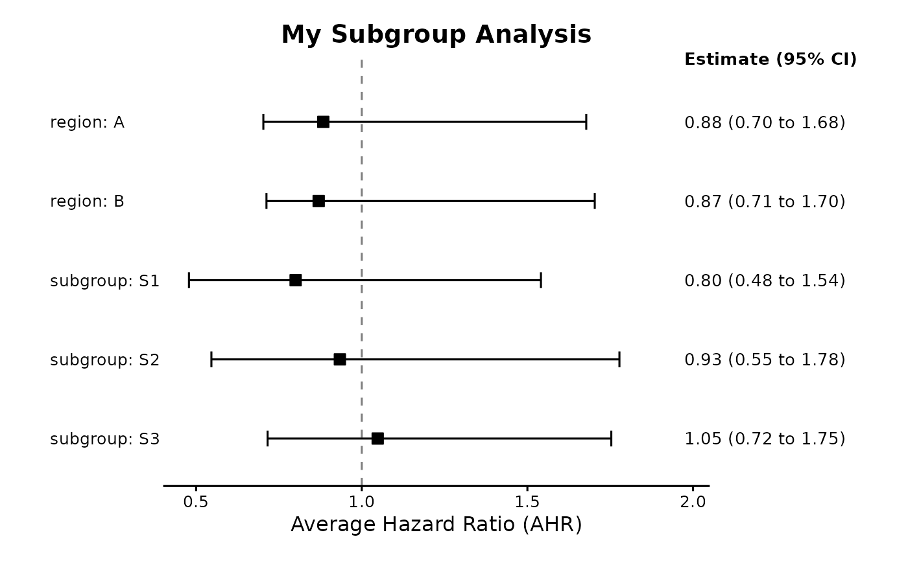

Plot Marginal Subgroup Treatment Effects
plot.subgroup_summary.RdCreates a forest plot from a `subgroup_summary` object. This version uses simplified labels of the format "variable: level".
Usage
# S3 method for class 'subgroup_summary'
plot(x, x_lab = NULL, title = NULL, ...)Examples
if (require("brms") && require("survival")) {
# 1. Create Sample Data (as in previous examples)
set.seed(123)
n <- 100
sim_data <- data.frame(
time = round(runif(n, 1, 100)),
status = sample(0:1, n, replace = TRUE),
trt = sample(0:1, n, replace = TRUE),
age = rnorm(n, 50, 10),
region = sample(c("A", "B"), n, replace = TRUE),
subgroup = sample(c("S1", "S2", "S3"), n, replace = TRUE)
)
sim_data$trt <- factor(sim_data$trt, levels = c(0, 1))
sim_data$region <- as.factor(sim_data$region)
sim_data$subgroup <- as.factor(sim_data$subgroup)
# 2. Run the full analysis (fast example)
# \donttest{
full_fit <- run_brms_analysis(
data = sim_data,
response_formula_str = "Surv(time, status) ~ trt",
response_type = "survival",
shrunk_predictive_formula_str = "~ trt:subgroup",
chains = 1, iter = 50, warmup = 10, refresh = 0
)
# 3. Get the summary object
eff_summary <- summary_subgroup_effects(
brms_fit = full_fit,
original_data = sim_data,
trt_var = "trt",
response_type = "survival",
subgroup_vars = c("subgroup", "region")
)
# 4. Plot the object
plot(eff_summary, title = "My Subgroup Analysis")
# }
}
#> Step 1: Preparing formula and data...
#> Response type is 'survival'. Modeling the baseline hazard explicitly using bhaz().
#> Treatment 'trt' added to unshrunk prognostic terms by default.
#> Auto-adding missing prognostic effect for interaction: subgroup
#>
#> Step 2: Fitting the brms model...
#> Using default priors for unspecified effects:
#> - unshrunk prognostic (b): normal(0, 5)
#> - shrunk predictive (b): horseshoe(1)
#> Fitting brms model...
#> Compiling Stan program...
#> Start sampling
#> Warning: The largest R-hat is 1.21, indicating chains have not mixed.
#> Running the chains for more iterations may help. See
#> https://mc-stan.org/misc/warnings.html#r-hat
#> Warning: Bulk Effective Samples Size (ESS) is too low, indicating posterior means and medians may be unreliable.
#> Running the chains for more iterations may help. See
#> https://mc-stan.org/misc/warnings.html#bulk-ess
#> Warning: Tail Effective Samples Size (ESS) is too low, indicating posterior variances and tail quantiles may be unreliable.
#> Running the chains for more iterations may help. See
#> https://mc-stan.org/misc/warnings.html#tail-ess
#>
#> Analysis complete.
#> --- Calculating overall marginal effect... ---
#> Step 1: Creating counterfactual datasets...
#> ...setting interaction dummy variables for the 'all treatment' scenario.
#> Step 2: Generating posterior predictions...
#> ... (reconstructing baseline hazard and getting linear predictors)...
#> Warning: Dropping 'draws_df' class as required metadata was removed.
#> Step 3: Calculating marginal effects...
#> Done.
#>
#> --- Calculating specific subgroup effects... ---
#> Step 1: Creating counterfactual datasets...
#> ...setting interaction dummy variables for the 'all treatment' scenario.
#> Step 2: Generating posterior predictions...
#> ... (reconstructing baseline hazard and getting linear predictors)...
#> Warning: Dropping 'draws_df' class as required metadata was removed.
#> Step 3: Calculating marginal effects...
#> ... processing subgroup
#> ... processing region
#> Done.
#> Preparing data for plotting...
#> Generating plot...
#> Done.
#> `height` was translated to `width`.
